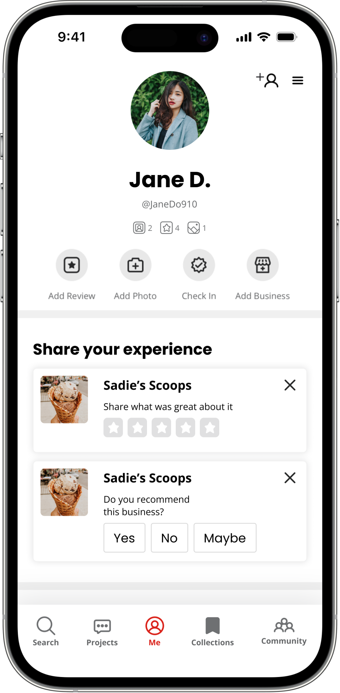
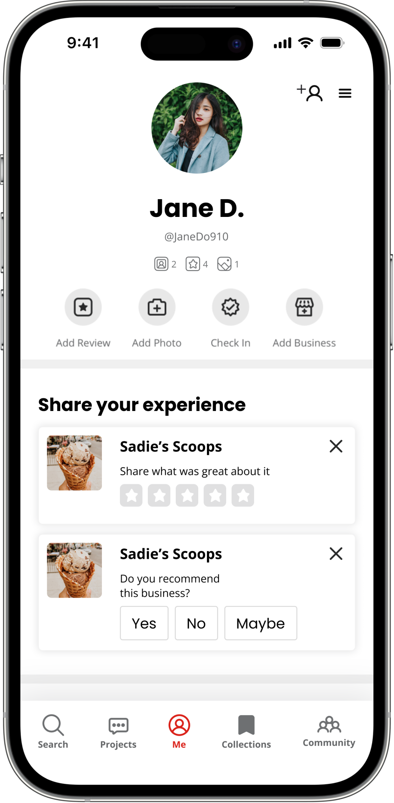

Yelp Community
Using social relationships to communicate authenticity in online reviews
Product & UX Design, UX Research
February - March 2023

 

Overview
In Feburary 2023, we were tasked with a design challenge that required us to connect a traveler to a service provider. Our solution was to this challenge was Yelp Community, an extension of the Yelp mobile app, designed to connect users, build users’ trust in online reviews, and increase appeal of the app to a younger user demographic. My team and I completed this project over 5 weeks, starting with user research and ending with our first round of usability testing.
Roles & Responsibilities
- Conducting user interviews and secondary user research
- Analyzing user insights from user interviews, survey results, and secondary user research
- Building mid-fidelity prototypes in Figma for usability testing
- Creating slide deck for final presentation
Tools
- Figma
- Google Workspace
- Zoom
Defining the problem
My team made two initial assumptions about travelers:
- They struggle to find visually accurate travel recommendations online and want to explore local spots
- They want to share their favorite spots to visit with others on social media
These initial assumptions led us to what we believed was the problem:
How might we create a social media platform that encourages travelers to explore local destinations with visual information?
Jumping on the trends at the time, our team originally thought to present visual information about a location of interests in the form of short-form video content.
Understanding our users
We drafted two behavioral personas: a content creator and a typical viewer. However, after five user interviews and additional survey responses, we realized the problem space and users we were targeting didn’t need a solution.
Major issues with our travel app concept included:
- Lack of trust in online content
- Concern for safety
- Solving a problem that already has a solution
Furthermore, key insights in our research highlighted that social media users place great significance on establishing trust via close relationships and conducting their own research prior to traveling to a location or purchasing a product.

Survey data and secondary research revealed:
- Yelp was the most commonly used travel app among users
- Difficult to navigate the app for certain social features
- Risk of fake or inaccurate reviews
- Majority of user base is age 35 and older
- Younger generations (Gen Z) less likely to trust online reviews, but more likely to trust “word of mouth” recommendations
Redefining the problem
Our mistake was making assumptions about the user before conducting appropriate user research. The problem wasn’t that users need a new social media app for travel recommendations: users had more issues with the trustworthiness of recommendations rather than the need for recommendations.
How might we create a trust-based community that sets appropriate expectations and reduces the time users spend on prior research on new locations?
We decided to address the issues of untrustworthy reviews on the Yelp app by improving the social activity features on the app. Our goals aimed to improve trust in Yelp reviews to appeal to a younger audience and expand Yelp’s current user base. Most users share similar tastes as their friends, therefore we wanted to use this social relationship to our advantage. If users already know what their friends’ like or dislike, they can form more accurate expectations of whether or not they themselves will like a business or not. Using this social relationship, we can improve trust in online Yelp reviews if the users know the tastes of the reviewer personally.
Our behavioral archetypes were iterated to reflect our users’ needs and the company’s goals:


Ideating the solution
Following a rapid brainstorming session, my team and I determined three features that we considered necessary to improve the user experience of the app:
- Establishing a clear path to the activity page
- Simplifying the process for finding and adding friends
- Provide options for profile privacy so users can control who can see the content they post
Learning from our previous mistakes of not considering the user’s perspective, my team and I created a user journey storyboard to empathize with a typical user who may interact with this design:

Creating a prototype for testing
Redesigning the menu bar content
We re-organized the bottom navigation menu, replacing the “More” menu item with a “Community” menu item. The contents under the previous “More” menu item were moved to the profile page. This adds a clear, easily noticeable pathway to the social page of the app.

Designing a new community page
Our new “Community” page was divided into two sections: an “Activity” section and “Talk” section. In the Activity section, users can view their friends’ reviews, check-ins, and social activity. The “Talk” section brings out an existing Yelp social feature that had been previously located at the bottom of the “More” page. Here, users can join forums to talk about different topics, or socialize with other Yelp users in their local area.

Adding privacy options when writing a review
Because many users mentioned that they prefered to post just for their close friends and family rather than for strangers, we added an option for adjusting review visibility. A review that is marked private before posting will be seen only by friends of the user, and the star rating will not contribute to the businesses public star rating.

Simplifyng the user flow for adding friends
The user flow to add friends was also modified to include less clicks. Now, each user has their own unique username. Users can add friends by going to the profile page and clicking on the + icon in the upper right corner, then search their friends’ usernames to add them. This method of searching by username is more efficient and intuitive to seasoned social media users, compared to the current process, in which users needed to search by first name and last initial, then filter by city.

Interactive Prototype
User Testing and Next Steps
When testing our prototype, we found success in that users felt:
- Reviews were more trustworthy
- More incentive to write reviews
- The user interface of the app was more efficient to navigate
However, there were also a few areas for improvements:
- The word “Community” was too ambiguous in meaning - this needed to be updated to avoid confusion towards the content of the social tab
- Add friends was not communicated clearly - iconography must be updated for clarity and this function should be included on multiple pages including the Community page
- Some users initially clicked on the search bar on the home page to search for friends’ reviews - highlighting freinds’ reviews in search results may be an interesting direction to explore in future iterations
Learning opportunities
As my first UX design challenge, I learned many crucial lessons about the design process and moving on from failures. While my team and I inially started off by defining the problem and ideating solutions before doing adequate research, we realized that we needed to take a step back to analyze user insights and redefine our problem space. Listening to our users led us back on track to designing a solution that would actually target users’ pain points.
Likewise, I also learned a lot about desgining a product from a business standpoint. While it is important to consider the user’s perspective, my team and I also needed to consider the costs and benefits of this design to Yelp as a company. I constantly asked myself, “How might we incentivize users who don’t normally use Yelp to actually use the app?” In this way, I learned the importance of viewing the problem space from different perspectives and designing a solution that addresses both stakeholder and user needs.